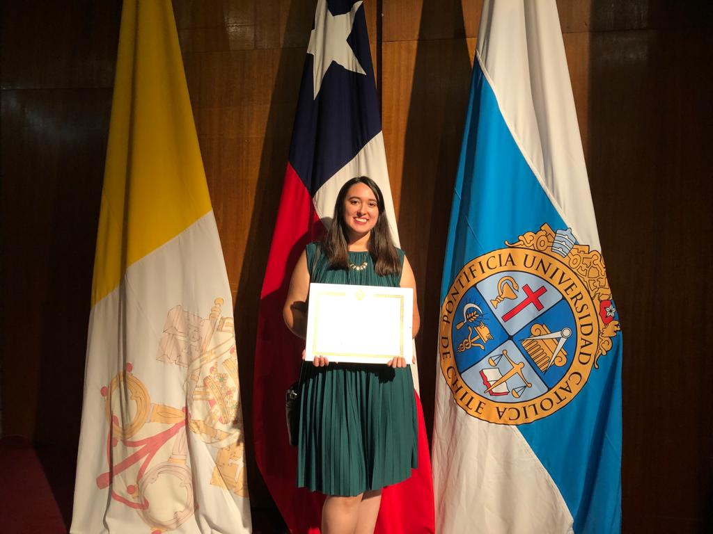

Currriculum Vitae

Ana Belén Ilabaca
Resumen profesional
Profesional del área de la salud con estudios en Salud Pública,
gestión de calidad y administración en salud. Experiencia laboral
en el sector privado y público, con alto interés de desarrollo profesional
en el sistema público, para aportar en la estructuración de programas o coordinación de éstos,
que se enfoquen en mejorar la salud de la población en todas sus áreas.
Datos personales
- Fecha de Nacimiento: 4 de Agosto de 1990
- Nacionalidad: Chilena
- Registro Nacional de Prestadores Individuales de Salud: Nº 319846
- E-mail: abilabae@gmail.com
Últimas experiencias laborales
- Ministerio de Salud (Octubre 2021- Actualidad):Encargada de validar vacunas Covid-19
de chilenos y extranjeros que ingresan a Chile. Además de verificar la identidad de éstos
a su ingreso y aportar en el proceso de notificación de errores en el Registro Nacional de
Inmunizaciones (RNI).
- Seremi de Salud (Marzo 2020- Octubre 2021): Encargada de turno de Búsqueda Activa (BAC) en
Aeropuerto Arturo Merino Benitez (AMB) aportando en la entrega de información respecto a
los pasajeros que se realizan PCR en Aeropuerto AMB. Autoridad Sanitaria, encargada de
fiscalizar a pasajeros de vuelos internacionales y nacionales en la contingencia nacional
por COVID-19.
- Apoyo como profesional de investigación (Abril 2020- Junio 2021): Apoyo en diferentes
proyectos del área de Salud Pública y Ambiental, de la Dra. Sandra Cortés,
Pontificia Universidad Católica de Chile. (Freelance).
Competencias profesionales
- Ingles: Nivel básico hablado y escrito. Nivel alto en lectura.
- Dominio de Office intermedio- avanzado (Word y Excel).
- Dominio básico SPSS.
Para obtener más información visitar la siguiente página: Linkedin Ana Belén Ilabaca
Link a Portafolio